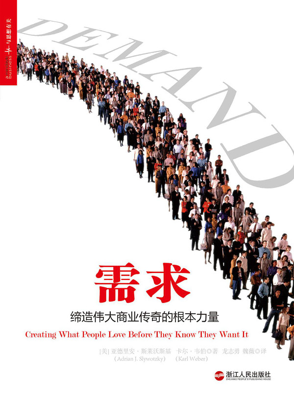

注：【】部分为笔者心得，非原文摘抄。
- 想要成为成功的需求创造者，就要把思维方式从劝说人们购买产品，升华到人与人之间的深入理解，升华到从客户的双眼和情感角度看世界。
- 人们实际购买行为与内心真实需要之间存在巨大的鸿沟，将这道鸿沟作为想象力的起跑线，从需求角度出发来思考现实的问题。基于现实展开全新的想象，然后再造新的现实。由此创造出来的新产品，客户无法拒绝，竞争对手难以复制。
- 创造需求的 6 大关键：
- 为产品赋予魔力；
- 通常来讲赢家并不是先行者，而是第一个能创造出情感共鸣并能把握住市场方向的人。
- 化解生活中的麻烦；
- 构建完善的背景因素；
- 寻找激发力；
- 打造 45° 产品精进曲线；
- 去平均化。
- 为产品赋予魔力；
- 需求创造者对事物保有很强的好奇心，精力十分旺盛，思维缜密，严于律己，自信十足，愿意不断进行自我挑战，为人谦逊并散发着富有品味的幽默感。他们总是一刻不停地去寻找客户身边尚未得到解决的麻烦。
- 情感诉求与产品功能拥有同等的重要性。
- 在需求与人性的微妙关联中，有一点值得关注：左右我们做出重大决策的，通常是不起眼的小事。
- 去做别人没做过的事，为顾客提供他们当时不具备的选择。——罗伯特·魏格曼
- 密切关注新出现的行业趋势，并努力赶在前面。
- 单凭多给几块钱工资，根本无法让员工释放出激情。
- 把事情做对，要比把事情做快更为重要。
- 伟大的需求创造者总是十分重视情感诉求，并将这一关键元素融合到功能十分完备的产品之中，以产生魔力。
- 无论在哪个领域，对于尚待实现的潜在需求而言，麻烦都是最先出现的提示线索和最早的闪光信号。
- 在高科技领域中，领导者们很容易落入一种陷阱，认为业务的中心是设备和产品，而不是人本身。
- 打开成功的大门的钥匙，是“以用户问题为中心”的创新方案，而不是将目光锁定在设备性能本身。
- 减少麻烦，而不是减少成本。
- 如果我们把人的重要性放在盈利前面，我们就能盈利。
- 聪明的需求创造者在于用户对话之外，还会通过大量的观察来得出自己的结论，尤其会着重注意到人们所说的话与他们的实际行动之间存在的差异。
- 贝索斯的经商策略：我们一旦遇到棘手的困难，陷入永无休止的循环，无法决定下一步行动的时候，我们就会试着将困难转化为一个直观的问题，向自己提问，‘怎样做会对用户更有利？’”
- 无论何时，只要出现了浪费的现象，就说明该系统并不完美。
- 人们的购买决定在很大程度上受控于惯性、疑虑、懒惰、习惯和冷漠。
- 需要一个具体的、能让人采取切实行动的激发力，才能让我们真正把产品买回家。
- 利用外界资源来创造背景因素，而不是一切只靠自己，从无到有地打造自己这款产品所需的背景因素。
- 新型业务涉及的核心是无法通过模仿的来的。
- 仅凭一款创新产品，并不足以激发出大规模需求。
- 针对零售商的调查显示，向客户同时提供咖啡机试用和咖啡品尝的商店，其销售额是仅展示展示咖啡机商店的 6 倍。
- 如果你在市场中以先锋的姿态推出某种产品，没有先例、没有道路可循，在这样的情况下，关键就在于尝试。谁也不知道会发生什么。因此，你尝试的越多，发现的就越多，学习的就越快，前进的就越远。—— 瓦克曼
- 万事俱备并不保证成功。——赫胥黎
- 如果你希望战胜消费者固有的惰性，并将潜在的需求能量转化为真正的需求，那么就还需要找到最强有力的激发力，并有效地对其进行部署。
- 不依赖于假设、直觉或“常识”，深入挖掘证据，跟着证据指引的方向前行。
- 从“我无所谓”转变为“我真的想要”，就是需求发生的一刻。
- 被长期压抑的需求一旦得到释放，就会产生变革整个社会的力量。
- 需求创造从来都不是一次成型的事，也不可能因成功的产品发布就告终。
- 熵，是商业发展中持久存在的危险，而在快餐行业则更为严重。
- 以关系为中心、以信任为基础的社会规范，与市场规范有着同等的重要性。
- 如果公司不能将成千上万的员工都发展成为需求的协同创造者，那么缓慢而难以察觉的质量下滑，有可能会成为致命的内伤，将自己扼杀。
- 设计出一款用来吸引所有客户的产品，永远都是浪费时间与金钱。
- 识别并消除那些令“尝试客户”失去兴趣、不想再次光临的绊脚石，很可能就是打开未来需求的关键。
- 人们很希望看到他们喜欢的产品在更年轻、更庞大的受众群体中流行开来。这是需求具备的一种社会元素，常常被人忽视，却颇为强大。
- 如果人与人之间的交流对创造需求来说非常关键，那么在这类组织中，就需要对需求差异予以重视。
- 利用成本有效的方式一个对差异性：
- 创造出产品的不同版本，最好令其中的大部分元素保持一致，以降低成本；
- 创造一个带有补充服务的平台，以满足个人客户的具体需求；
- 提供针对不同组织的解决方案，任命专人负责针对具体需求来对产品进行定制，以确保其工作效果；
- 利用专有信息，对产品进行个性化处理；
- 在必要的情况下，设立一个新的业务部或新公司，专门为不同类型的客户提供服务。
- 管理者在预测高风险项目的结果时，总是很容易落入计划谬误（planning fallacy）的陷阱之中。这时，管理者会以错觉中的乐观心态为基础做决策，而不是以理性的收益、损失和概率平衡为基础。——《成功的错觉》
- 数字会给你力量，让你清醒。
- 在强烈信念与客观数据之间的竞争，数据永远是输家。
- 提高产品发布成功率的 7 大思维方式：
- 具备进行致命缺陷搜查的本能动力；
- 启动组织内部的竞争；
- 充分理解“以模仿而实现独特性”的价值；
- 永远铭记对产品进行情感化处理的重要性；
- 产品设计是强有力的情感激发力；
- 拥有独特的组织方程式；
- 在信心与畏惧之间保持精妙的平衡；
- 自信很重要，但恐惧更是不可或缺。恐惧，能帮助你对灾难进行充分的想象和预见，而此时，你恰恰可以付诸行动，对现状加以改善并积极避免灾难的真正发生。
- 在现实世界中，成功的发布不会是一天、甚至一个月的工夫。
- 修订——不断地修订。
- 着重于最优秀人才的招聘、保留和激励。
- 绝大多数公司倒闭，最突出的风险主要有以下四种：
- 技术不起效；
- 管理团队不起效；
- 公司资金短缺；
- 产品无需求。
- 很少有公司领导者具有足够的勇气，敢于与客户交谈，并对他们掌握的那些令人不快的现实情况作出回应。
- 巴菲特的投资前提：一家公司（a）1 块钱卖一件产品，（b）1 分钱成本，（c）该产品的需求能永远延续，（d）该产品周围有强大的壁垒围护，（e）拥有优秀的管理团队。
- 你可以去向人们询问他们喜欢什么、讨厌什么，但是人们的回答并不能给出全部的实情。只有专心致志地观察他们，才能从中发现更多有价值的信息。
- 科技创新正是需求创造的根基。
- 纯科学研究的长期效益是根本无法预测的。
- 研究与开发的真正价值，存在于对陌生领域的探索。——本田宗一郎